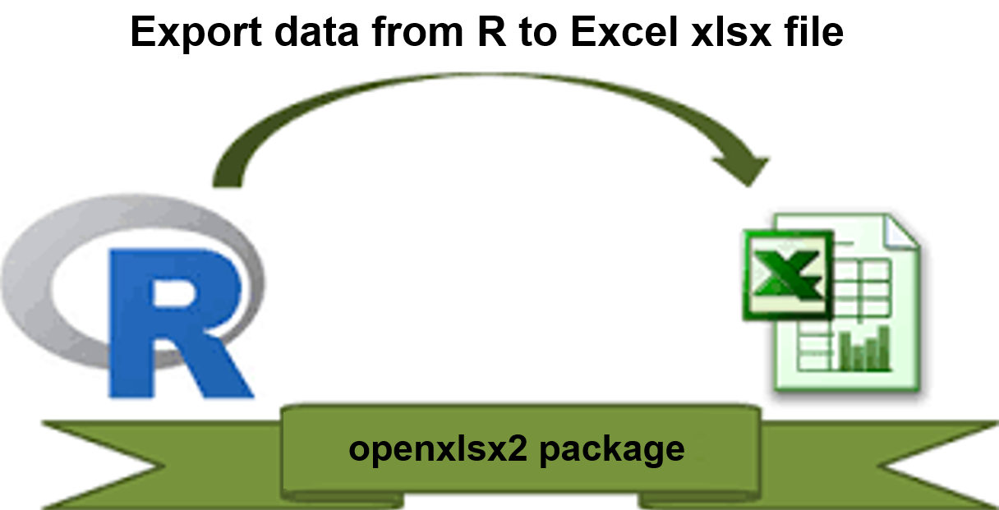

![]()
if (!require(install.load)) {
install.packages("install.load")
}
install.load::install_load(c("openxlsx2", "readxl", "purrr"))

Introduction
The openxlsx2 package provides an efficient way to export multiple data frames from R into an Excel workbook, where each worksheet in the workbook corresponds to a specific data frame in R.
Prerequisites
This tutorial begins by ensuring that the necessary packages are installed and loaded. If they are not already present in your R environment, the following code will download and install them. Note that an internet connection is required for this step.
Preparing the Data
In this example, we will export four commonly used datasets: airquality, mtcars, iris, and diamonds, each to a different worksheet within the same Excel workbook.
dataframe1 <- datasets::airquality
dataframe1 |> head()dataframe2 <- datasets::mtcars
dataframe2 |> head()dataframe3 <- datasets::iris
dataframe3 |> head()dataframe4 <- ggplot2::diamonds
dataframe4 |> head()Exporting Data Frames to Excel
Now that we have our data frames prepared, we will assign them to individual worksheets in an Excel workbook. The worksheet names will correspond to the names of the data frames in R. For example:
- sheet1- airquality
- sheet2- mtcars
- sheet3- iris
- sheet4- diamonds
list_of_datasets <- list(
"airquality" = dataframe1,
"mtcars" = dataframe2,
"iris" = dataframe3,
"diamonds" = dataframe4
)
write_xlsx(list_of_datasets, "Excel_workbook.xlsx")After running the code, you will find the Excel_workbook.xlsx file in your working directory.
Verifying the Export
You can verify the content of the Excel workbook either by opening it in Excel or by using R. Below, we’ll check the worksheet names and inspect the contents of each worksheet using the readxl and purrr packages.
excel_sheets("Excel_workbook.xlsx")#> [1] "airquality" "mtcars" "iris" "diamonds"To explore the content of each worksheet:
path <- "Excel_workbook.xlsx"
path |>
excel_sheets() |>
set_names() |>
map(read_excel, path = path)#> $airquality
#> # A tibble: 153 × 6
#> Ozone Solar.R Wind Temp Month Day
#> <dbl> <dbl> <dbl> <dbl> <dbl> <dbl>
#> 1 41 190 7.4 67 5 1
#> 2 36 118 8 72 5 2
#> 3 12 149 12.6 74 5 3
#> 4 18 313 11.5 62 5 4
#> 5 NA NA 14.3 56 5 5
#> 6 28 NA 14.9 66 5 6
#> 7 23 299 8.6 65 5 7
#> 8 19 99 13.8 59 5 8
#> 9 8 19 20.1 61 5 9
#> 10 NA 194 8.6 69 5 10
#> # ℹ 143 more rows
#>
#> $mtcars
#> # A tibble: 32 × 11
#> mpg cyl disp hp drat wt qsec vs am gear carb
#> <dbl> <dbl> <dbl> <dbl> <dbl> <dbl> <dbl> <dbl> <dbl> <dbl> <dbl>
#> 1 21 6 160 110 3.9 2.62 16.5 0 1 4 4
#> 2 21 6 160 110 3.9 2.88 17.0 0 1 4 4
#> 3 22.8 4 108 93 3.85 2.32 18.6 1 1 4 1
#> 4 21.4 6 258 110 3.08 3.22 19.4 1 0 3 1
#> 5 18.7 8 360 175 3.15 3.44 17.0 0 0 3 2
#> 6 18.1 6 225 105 2.76 3.46 20.2 1 0 3 1
#> 7 14.3 8 360 245 3.21 3.57 15.8 0 0 3 4
#> 8 24.4 4 147. 62 3.69 3.19 20 1 0 4 2
#> 9 22.8 4 141. 95 3.92 3.15 22.9 1 0 4 2
#> 10 19.2 6 168. 123 3.92 3.44 18.3 1 0 4 4
#> # ℹ 22 more rows
#>
#> $iris
#> # A tibble: 150 × 5
#> Sepal.Length Sepal.Width Petal.Length Petal.Width Species
#> <dbl> <dbl> <dbl> <dbl> <chr>
#> 1 5.1 3.5 1.4 0.2 setosa
#> 2 4.9 3 1.4 0.2 setosa
#> 3 4.7 3.2 1.3 0.2 setosa
#> 4 4.6 3.1 1.5 0.2 setosa
#> 5 5 3.6 1.4 0.2 setosa
#> 6 5.4 3.9 1.7 0.4 setosa
#> 7 4.6 3.4 1.4 0.3 setosa
#> 8 5 3.4 1.5 0.2 setosa
#> 9 4.4 2.9 1.4 0.2 setosa
#> 10 4.9 3.1 1.5 0.1 setosa
#> # ℹ 140 more rows
#>
#> $diamonds
#> # A tibble: 53,940 × 10
#> carat cut color clarity depth table price x y z
#> <dbl> <chr> <chr> <chr> <dbl> <dbl> <dbl> <dbl> <dbl> <dbl>
#> 1 0.23 Ideal E SI2 61.5 55 326 3.95 3.98 2.43
#> 2 0.21 Premium E SI1 59.8 61 326 3.89 3.84 2.31
#> 3 0.23 Good E VS1 56.9 65 327 4.05 4.07 2.31
#> 4 0.29 Premium I VS2 62.4 58 334 4.2 4.23 2.63
#> 5 0.31 Good J SI2 63.3 58 335 4.34 4.35 2.75
#> 6 0.24 Very Good J VVS2 62.8 57 336 3.94 3.96 2.48
#> 7 0.24 Very Good I VVS1 62.3 57 336 3.95 3.98 2.47
#> 8 0.26 Very Good H SI1 61.9 55 337 4.07 4.11 2.53
#> 9 0.22 Fair E VS2 65.1 61 337 3.87 3.78 2.49
#> 10 0.23 Very Good H VS1 59.4 61 338 4 4.05 2.39
#> # ℹ 53,930 more rowsConclusion
This tutorial demonstrated how to efficiently export multiple data frames to separate worksheets in an Excel workbook using R. The approach is highly customizable, allowing for easy integration into your data analysis workflow.